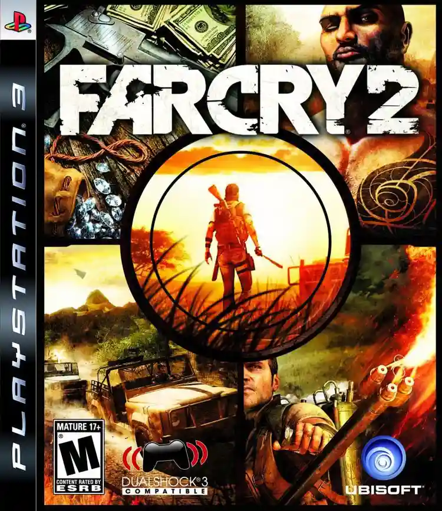
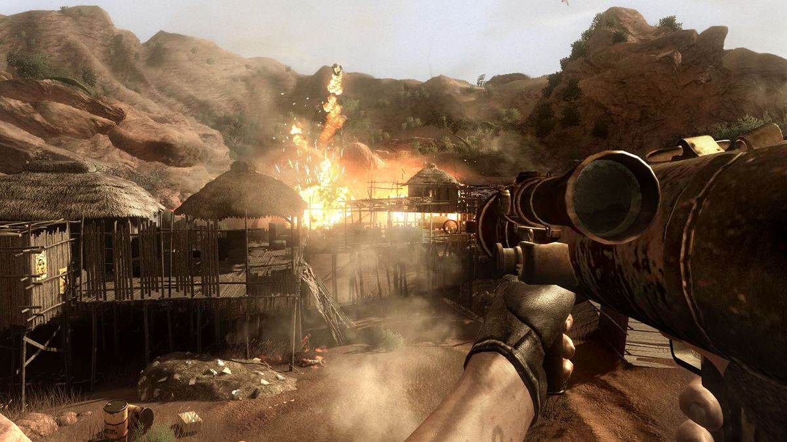

Welcome to the Far Cry 2 Download Page
Get ready for an action-packed adventure!
Download Far Cry 2 Now 2.31GB
About
You are a gun for hire, trapped in a war-torn African state, stricken with malaria and forced to make deals with corrupt warlords on both sides of the conflict in order to make this country your home.
You must identify and exploit your enemies' weaknesses, neutralizing their superior numbers and firepower with surprise, subversion, cunning and of course brute force.
- Fire: Feel the heat of the most realistic fire ever seen in a video game! Use wind and propagation to surround and trap your enemies. Grab your Molotov cocktails or flamethrowers to take out your enemies.
- Destructible environment: No more obstacles: Everything is breakable and alterable, even in Multiplayer mode. The DUNIA engine's RealTree technology also delivers the most realistic nature deterioration system ever.
- Open world: Experience real freedom while roaming in more than 50km2 without any loading. Choose your own path in this vast environment and explore a living African world.
- A huge adventure : Fight for two rival factions, and make your way up to your primary target by any means necessary. Take on over 70 side missions to earn valuable information, new weapons and vehicles.
System requiremetns
- OS:Microsoft Windows XP or Windows Vista (64 is supported)
- Processor: Pentium 4 3.2 Ghz, Pentium D 2.66 Ghz, AMD Athlon 64 3500+ or better
- Memory: 1 GB
- Graphics: 256 MB, Shader Model 3 required, NVidia 6800 or ATI X1650 or better*
- Storage: 3.5 GB (Multiple saves and user created maps will increase the amount of needed hard disk space.)
screenshots


Errors Probable Solution
If Any Dll error then click Here and Download that Dll file and put that in "C:/Windows/system32" folder
If "0x00000b" like error then install Direct X from erros folder
if any other then mail me on priyanshuzx120@gmail.com or use any AI
Note:The game file is 100% working